Only about a month ago, I decided to move my former website (running on Wix) to the Open Source Hugo platform, running it as a static website with MarkDown, using Azure Storage Static Website. For more details on how to do this, have a look at my blog post here
I have to say, it runs fine, is cheap, fast, reliable,…
But then I discovered the new Azure Static Web App capability, as announced during //Build conference earlier this week, so I wanted to give it a try.
And instead of starting from scratch, why not reusing the Hugo content I already have?
**Azure Static Web Site allows you to run JavaScript-based static web apps; Technically, Hugo does the same thing; by creating your blog post in MarkDown, and running “Hugo”, it somehow compiles your new blog post, images,… into a static HTML page. It’s this page and corresponding images (if any) that get uploaded to a “/public” folder. (Same thing happens on Azure Storage Static Site btw). So this was the mechanism I wanted to try.
One major difference between Azure Storage Static Site and the new Azure Static Web Site, is its dependency on GitHub. Yes, publishing your static site content is possible from a GitHub Actions CI Pipeline. While this also worked for the Azure Storage approach, you could actually just copy the compiled HTML files using AzCopy or Azure Storage Explorer.
Create a GitHub Repo
The starting point is having a GitHub Repo available, which contains our content. Again, since I already had all this, this process was quickly done. Make sure you remember your GitHub credentials giving access to the repo you want to use, as this will be asked for during the Static Web Site deployment.
Deploy Azure Static Web Site
- From the Azure Portal, select New Resource and search for Static Web Site (Preview); Click Create
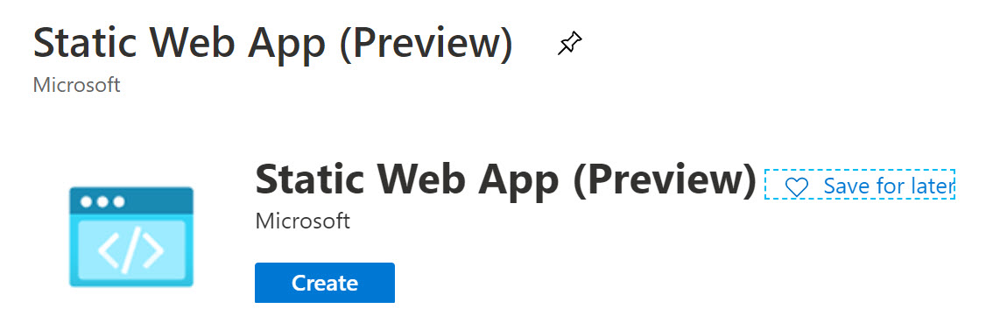
- Complete the different parameters, required for the resource deployment:
- Subscription = Your Azure Subscription
- Resource Group = New or existing Resource Group where you want to create the resource
- Name = Provide a name for the static web site (Note this doesn’t need to be a unique name like with a regular Azure App Service)
- Region = Close-by region where you want to host the site (note only a handful of Azure Regions are supported for now, but will probably grow)
- SKU = Free is the only option for now
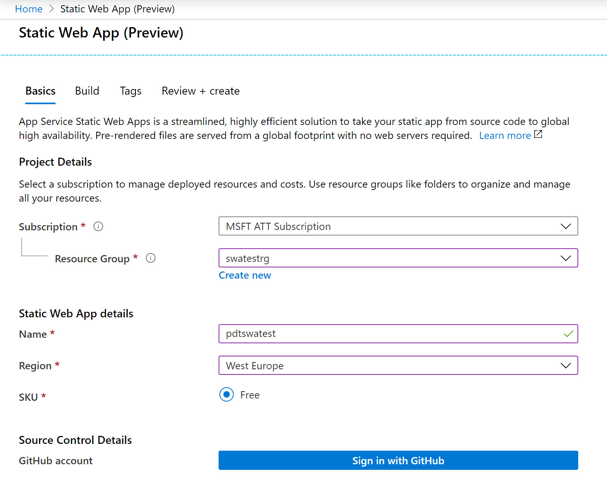
- Next, you are asked for your GitHub Credentials
Provide your GitHub credentials, and accept the application authorization; this will allow for the integration with GitHub Actions CI Pipeline later.
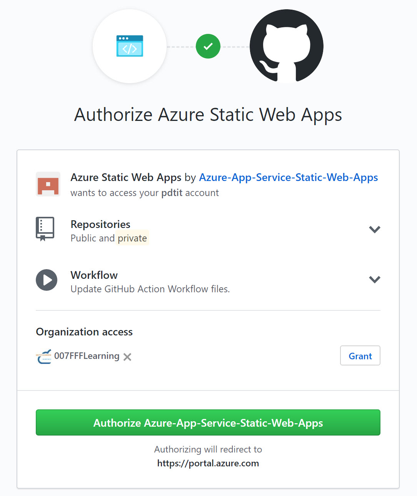
- Once the GitHub authorization is confirmed, you can complete the Source Control parameters:
- Organization = your GitHub account organization
- Repository = select the GitHub Repo containing the sample Hugo website (in my example, this is github.com/pdtit/hugotest1 - feel free to Fork)
- Branch = the Repo branch (typically master, but could be different)
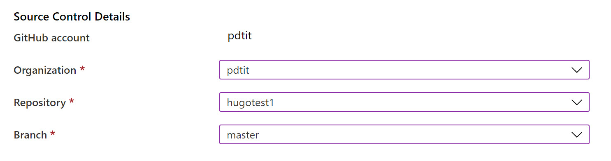
- Click the “Next:Build” button, to move on to the next step in the resource creation process; here, you point to the actual site folder containing the site content. In case of Hugo, this is typically the "/public" folder from your local Hugo development location
Note you only have to complete the App Location parameter, and leave the other 2 empty
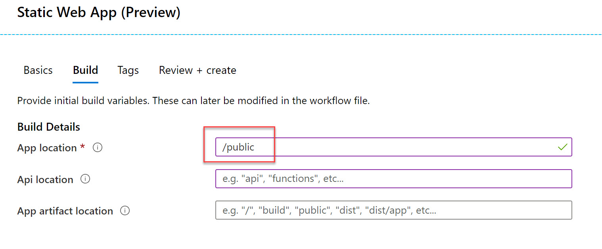
- Complete the process by clicking the “Review & Create” button. When all looks OK, confirm by pressing the “Create” button. Wait for the Azure resource to get created; this shouldn’t take that long.
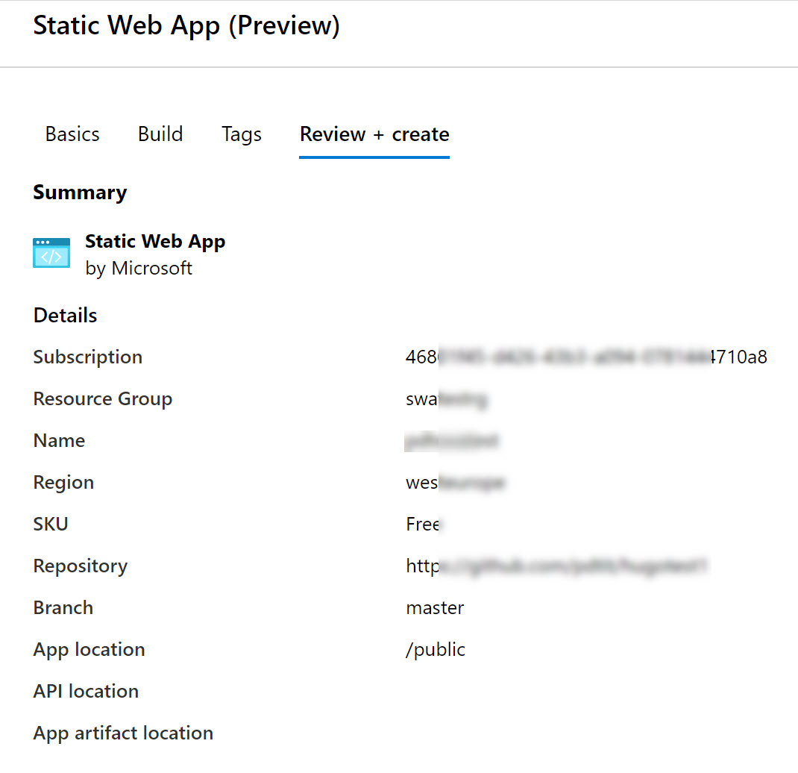
- Once the resource is created, select “Go to Resource” from the notification popup appearing; this will redirect you to the actual Static Site resource that just got created. Notice the unique URL that got created for this specific site.
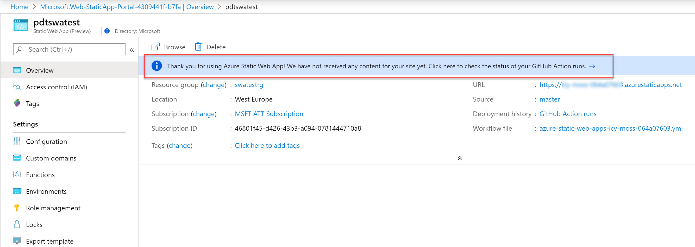
- Notice the blue ribbon informing you about not having any content of the site yet, and pointing to GitHub Actions. Click on the blue ribbon to get redirected to the GitHub Actions. Notice an “Azure Static Web Apps CI/CD” Action is automatically created, and running (orange color); Give it a few minutes to complete (green color).
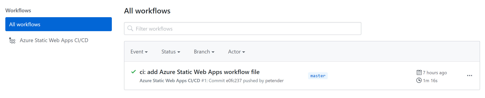
- If you want to see more details about the CI/CD pipeline itself, select the pipeline; this will show the Build and Deploy Job status, exposing details for each and every step in the build process
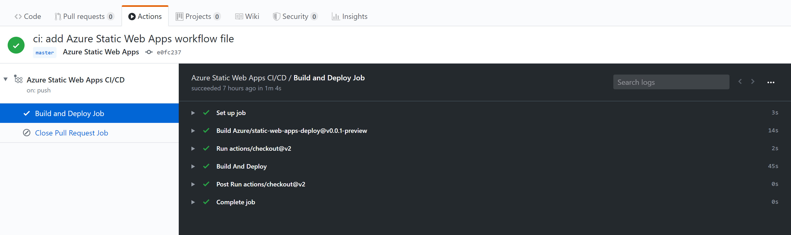
Verify the Static Site is running
Only thing left to do is validating if the website is actually running. TO do this, go back to the Azure Portal, and click on the URL of the Static Site
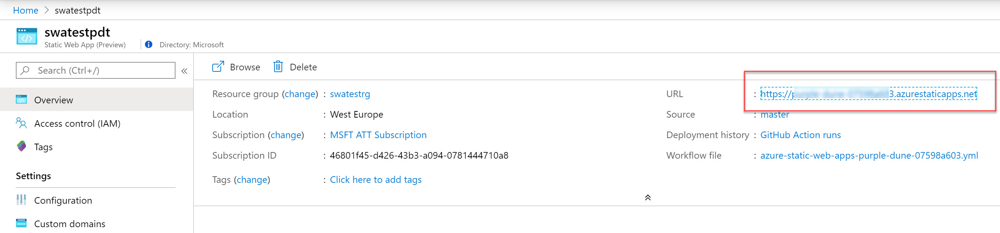
This brings up your browser and nicely shows the Hugo website. Notice this is an Azure Namespace URL for now, but feel free to continue the configuration by checking on the Custom Domains option.
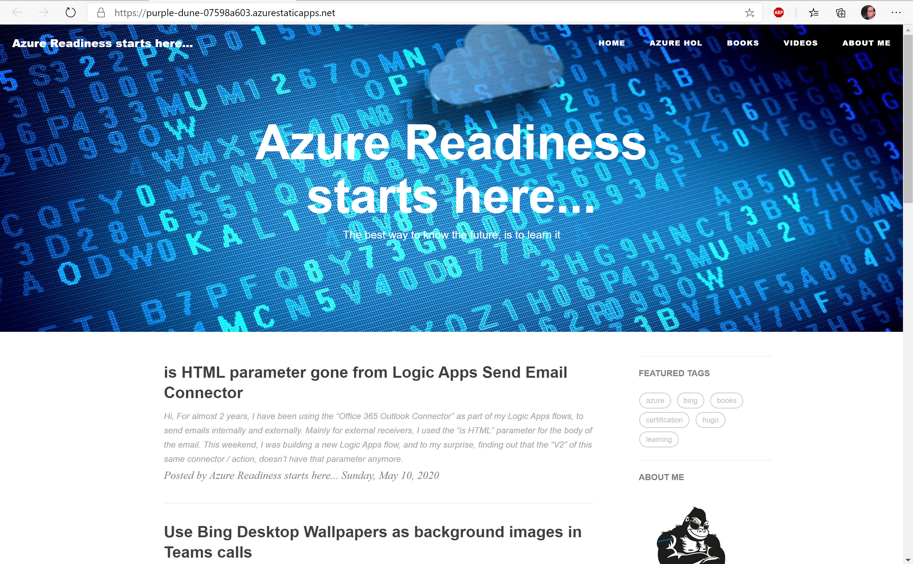
While this is still in preview, I’m pretty convinced this will soon become a very popular service. I know I’ll keep using it already!
As always, reach out when having any questions, or feel free to share feedback using my social media links.
Found this article useful? Consider supporting my blog


/Peter